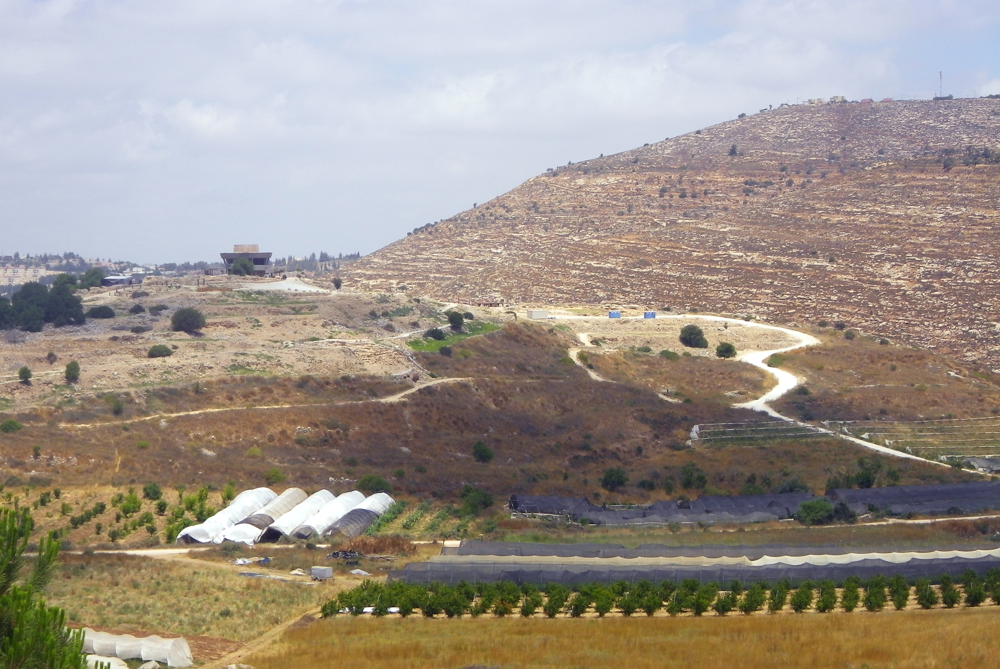

Shiloh (Tabernacle Site)

- Find Name
- Shiloh (Tabernacle Site)
- Historical Period
- Iron Age I
- Artifact Date
- Late Bronze–Iron Age (tabernacle period, c. 12th–11th centuries BC)
- Date Discovered
- 1920s (Danish excavations); 1981–1984 (Israeli excavations); ongoing
- Discovery Location
- Tel Shiloh, West Bank
- Current Location
- In situ, Tel Shiloh
- Timeline Era
- Conquest and Judges
- Description
- The hill-country site where, according to Joshua, the whole congregation set up the tent of meeting, and where Samuel grew up under Eli before the ark was captured by the Philistines. Excavations have revealed a substantial Israelite town with cultic remains, though the tabernacle building itself has not been identified; the site's identification as biblical Shiloh is widely accepted.
- Biblical Significance
- Shiloh is where Israel worshipped before there was a Temple, and where a boy heard God call his name in the night. Its stones remember both the glory of the tent of meeting and the grief of the ark's capture — a place of beginnings and of loss, before Jerusalem took its place.
- Evidence Class
- Contextual
- Interpretations
- Scholars broadly accept Tel Shiloh as biblical Shiloh; the tabernacle structure itself has not been found, and claims to have located it precisely are not established.
- Scripture Illuminated
- Related People
- Related Books
- Related Places
Awaiting Review Not yet checked against scholarly sources. Treat its claims as provisional until this entry is reviewed. About verification
Last reviewed: not yet reviewed